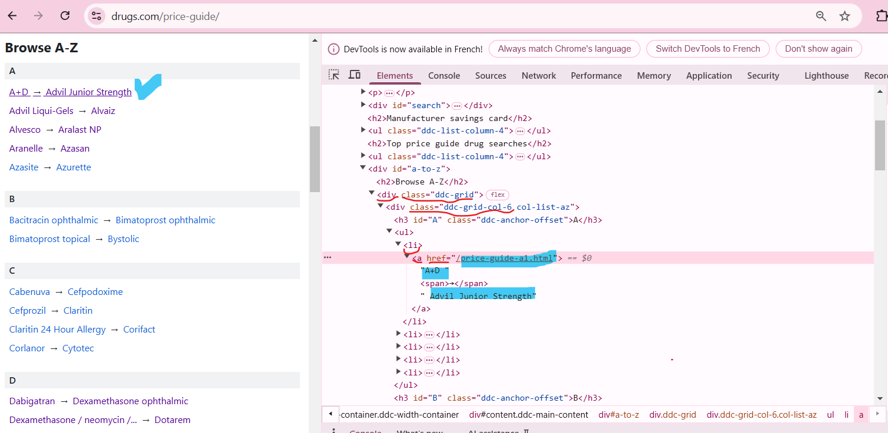

Overview of R: From Basics to Real-World Applications in HTA Context
Islem Meherzi
2025-04-09
Workshop Goals
Understand what R is and why to use it
Learn about CRAN, CTV, and R packages
Explore the RStudio interface and its main components
Start coding in R and writing custom functions
Discover key applications of R across industries
Work on a practical HTA (Health Technology Assessment) use case: learn how to easily scrape and use real-world web data in a creative way
Apply your learning through two hands-on exercises
Workshop Agenda
What is R Language?: What it is, why use it?, Packages, CRAN, Ctv
Exploring RStudio interface: Main components & setup
Key concepts in R : syntax, data structures, objects, etc
Functions in R
R in Action: Real-World Use Cases & Web Scraping Example in the Context of HTA
Hands-on Exercises: Apply what you’ve learned
What is R Language?
R a full-featured programming language
Free to use & open source
R facilitates Reproducible work : Shiny , Quarto, R Markdown,etc
Vibrant Community & Free Resources: RStudio Community, R-Ladies, R Bloggers and thousands of open-source contributions.
Why Choose R?
Designed for Data Science & Statistics: Built-in support for statistical modeling, machine learning, and visualization.
Extensive Package Ecosystem: Thousands of packages for diverse applications (data manipulation, visualization, machine learning, etc.).
Cross-Platform Compatibility: Runs on Windows, macOS, and Linux.
Interoperability: Can integrate with Python, SQL, C++, and more.
High Customizability: Users can extend functionalities through custom functions and packages.
Packages, CRAN & CRAN task views
Packages are like extensions that bring ready to use functions
The Comprehensive R Archive Network(CRAN): 22215 available packages
CRAN task views(Ctv) Curated lists of R packages grouped by topic (which can be automatically installed using the ctv package), helping users find relevant tools efficiently.
CRAN task view Example
# To automatically install the views, the ctv package needs to be installed, e.g., viainstall.packages("ctv")# and then the views can be installed via install.views or update.views (where the latter only installs those packages are not installed and up-to-date), e.g.,# https://cran.r-project.org/web/views/Econometrics.htmlctv::install.views("Econometrics")ctv::update.views("Econometrics")# To query information about a particular task view on CRAN from within R or to obtain the list of all task views available, respectively, the following commands are provided:ctv::ctv("Econometrics")ctv::available.views()# Name: NaturalLanguageProcessing# Topic: Natural Language Processing
Exploring RStudio interface
RStudio is an integrated development environment (IDE) for R, designed to streamline data analysis and programming tasks. It enhances R’s functionality by providing an intuitive user interface, improving code editing, debugging, and visualization. RStudio supports a more efficient workflow for data science tasks, offering tools for script writing, package management, and project organization
Source Pane: This is where you write and view R scripts. It can also display outputs from functions like View() that open datasets.
Console/Terminal: The console shows the execution of R commands, acting like the command line in R. The terminal tab gives access to the system’s BASH terminal (Linux command line), not related to R.
Environment/History: The environment displays variables and datasets in memory, along with their properties (e.g., type, dimensions). The history tab logs all executed R commands.
Files/Plots/Packages/Help: This pane handles multiple tasks: Files shows the contents of your computer’s directories and lets you set the working directory. Plots displays visual outputs of generated plots. Packages shows loaded packages and allows you to manage them.
Key concepts in R
Coding: Key concepts in R
# ----------- Syntax: dictates how we create and manipulate objects.{# Assignment: x <-10# Preferred assignment operatory =20# Also valid but less commonly used in some caseschar_var <-"hello"# Character data types in R are essential for handling text-based information # Example data: QALYs for a group of patientsqaly_values <-c(5.2, 6.1, 7.8, 4.9, 6.5)# Calculate the average QALYmean_qaly <-mean(qaly_values)print(mean_qaly)# Function Calls & documentation: ?function name#when you want learn more about a function (argument, options) or a dataset : ??mean# Conditional Statements:# R uses if, else if, and else# to control the flow of logic based on conditions: allowing # the code to react differently depending on the datax=4if (x >5) {print("x is greater than 5")} else{print("x is lower than 5") }View(mtcars)# ifelse() is a vectorized conditional function in R that checks a condition for each element in a vector and returns a value accordingly:# ideal for applying logic across entire datasets.ifelse(mtcars$mpg >20, "High", "Low") #you can store the output above in a new column mtcars$newcol <-ifelse(mtcars$mpg >20, "High", "Low") mtcars# which(): Get indices of TRUE values. which(mtcars$cyl ==6)which.min(mtcars$mpg)which.max(mtcars$mpg)mtcars$mpg[20]# to select the column from a dataframemax(mtcars$mpg)# Loops: # for loop uses for (i in sequence) { ... } to repeat code over elementsfor (i in1:5) {print(i)# print(paste("the index is : ",i ))}# Vectorized Operationsx <-c(1, 2, 3)y <- x *2# Each element is multiplied by 2print(y)}# ----------- Data Structures: determine how data is organized and accessed.{# Vectors: 1D collection of elements of the same type vect1 <-c(1, 2, 3, 4) # Numeric vectorvect2 <-c("hello1","hello2","hello3")# Matrices: 2D arrays with the same data type mat <-matrix(1:9, nrow =3, ncol =3)mat# lists :Collection of mixed data types my_list <-list(name ="John", age =30, scores =c(90, 85, 88))# Data Frames: Tabular structure (like spreadsheets) my_df <-data.frame(Name =c("Alice", "Bob"), Age =c(25, 30))nrow(my_df) #rows numberncol(my_df) #columns number# get values of a given column using $my_df$Age# add row# my_df= rbind (my_df, c("John","40"))# View(my_df)# add a column# cbind(my_df,gender=c("F","M","M")) # select Data Frame by rows /columnsView (mtcars)mtcars_rows <- mtcars[c(1:10),] mtcars_cols <- mtcars[,c(1:3)] #by column names c("mpg", "cyl" ,"disp"#get the names of columnsnames(mtcars)# Select columns mpg , gear, carb and the rows one to 5, # row 7 and the row number 9 to 12# Factors: Used for categorical variables gender <-factor(c("Male", "Female", "Male"))gender}# ----------- Objects store and represent data structures in memory. workspace, objects, source(){#Get the current working directory getwd()#Set the current working directory with setwd(‘Path/To/Your/Folder’).setwd("path/Folder")#Basic way to structure our code source("my_base_script.R")var1# save one object# save(df,file = "df.RData")# load("df.RData")# save all objects# save.image(file="m_all_object.RData")# load("m__all_object.RData")#file.exists("Path/to/file_name")}
Functions in R
Built-in Functions: Functions that come pre-installed with R and are always available, such as sum(), mean(), and print()
Package Functions: Functions provided by specific R packages that must be installed and loaded before use, such as ggplot() from the ggplot2 package or fread() from data.table.
User-Defined Functions: Functions created by users to perform specific tasks, defined using the function() keyword
Functions in R: Examples
#___________ 1) Built-in Functions:{my_vector_of_values <-c(2,4,5,6,10)sum(my_vector_of_values)mean(my_vector_of_values)substr("145 Hello",1,3) #on charnchar("how many char in this string") #on char?gsubgsub("a", "@", "Data Analysis") #on charmychar <-"Data Analysis"gsub("^", "-", mychar) gsub("is$", "**", mychar) # Regular expressions(like ^ , $) are patterns used to match character combinations in strings:# commonly used for text matching, extraction, and replacement in strings# Define a vector of medical procedure codesprocedures <-c("MRI-001", "MRI-002", "CT-101", "XRAY-200", "MRI-003", "ECG-500")# Use regex to filter MRI-related proceduresmri_procedures <-grep("^MRI-", procedures) #value = TRUE)# Print resultprint(mri_procedures)# functtion on df subset(mtcars, cyl ==4) #on df}#___________ 2) Package Functions:{# loading Functions from packages, the ‘::” operator if you need one function and load all using library if you need many# Import the whole library vs using import specific function# Ex1 fread function from data.tabledata.table::fread("large_file.csv")# relocate function from dplyr# --- Moving a Column After Another Column: If you want to move mpg after hpdplyr::relocate(mtcars, mpg, .after = hp)#print vs store into an object a_new_df <- dplyr::relocate(mtcars, mpg, .after = hp)a_new_df <- dplyr::relocate(mtcars, mpg, .before =4)# --- Example: Moving a Column to the Last Positiona_new_df <- dplyr::relocate(mtcars, mpg, .after = dplyr::last_col())}#___________ 3) Custom Functions:{ # Define a function to calculate BMI (Body Mass Index)# 1 - Desciption function name : calculate_bmi# 2 - input arguments : weight_kg, height_m ==> controling the output of the fctcalculate_bmi <-function(weight_kg, height_m) {#3 - Body of the function : represents all the code to be used internally (hidden by the wrapper of the function)# if (weight_kg <= 0 | height_m <= 0) {# return("Height & Weight must be greater than zero")# } bmi <- weight_kg / (height_m^2) # BMI formula# bmi <- round(bmi, 2) output <-paste0("BMI is: ",bmi ) #\n# last part of a function is the returns: wher the function stop and return # 4- Returns: what the function return, visible effect or silent effect (file, object) # it either return things : print or does thingreturn(output) #cat(output)}# Example usage:# Weight = 70kg, Height = 1.75m calculate_bmi(weight_kg =60,height_m =1.75) calculate_bmi(70, 1.76)# calculate_bmi(0, 1.9)}
R in Action: Real-World Use Cases
Examples of R real worlds applications and used packages
Data Scraping Example: Extract & Analyze drug names and prices
Web Scraping Example in R: Key Functions of the rvest Package
The main package used for web scraping in R is rvest, and its key functions include:
read_html() – Loads and parses the HTML content of a webpage or local HTML file.
html_nodes() – Selects multiple elements from the HTML using CSS or XPath selectors.
html_attr() – Extracts the value of a specific attribute (e.g., href, class) from selected elements.
html_text() – Extracts and returns the visible text content from selected elements.
Scraping Drug names & prices example: main webpage
To scrape drug names and prices, the first step is to extract data from the main page of of the target website : https://www.drugs.com/price-guide, which provides general drug lists.

main webpage: code in R
# ------- 1.1) Page 1: Get all lists of drugs # Base URLtarget_site_url <-"https://www.drugs.com/price-guide"# Read the pagemain_page_html <-read_html(target_site_url)# Extract drug links and namesdrug_links_1 <- main_page_html %>%html_nodes("div.ddc-grid div.ddc-grid-col-6 li a") %>%#ulhtml_attr("href") %>%na.omit()drug_links_1drug_names_1 <- main_page_html %>%html_nodes("div.ddc-grid div.ddc-grid-col-6 li a") %>%html_text() %>%#remove Leading/Trailing Whitespace trimws()# Convert relative links to full URLsbase_url="https://www.drugs.com"drug_links <-paste0(base_url, drug_links_1)# Store in dataframelists_drug_data <-data.frame(Drug = drug_names_1, URL = drug_links_1, stringsAsFactors =FALSE)
Scraping Drug Names & Prices: Second Webpage Example
In this step, we extract detailed drug information for each item listed on the previous page.
Second Webpage Example: code in R
druglistpage_exple <-"https://www.drugs.com/price-guide-d1.html"# Read the HTML content into rvestdruglistpage_html <-read_html(druglistpage_exple)# Extract the names and links (href attributes)drug_links_2 <- druglistpage_html %>%html_nodes("ul.ddc-list-column-2 a") %>%html_attr("href")drug_names_2 <- druglistpage_html %>%html_nodes("ul.ddc-list-column-2 a") %>%html_text()# Combine the names and links in a data framedata_ex <-data.frame(Name = drug_names_2, Link = drug_links_2)# View the dataprint(data_ex)
Scraping Drug Variants & Prices: Final Webpage Example
In this step, we extract detailed drug variants and their prices from the last webpage.
Final Webpage Example: code in R
drug_url <-"https://www.drugs.com/price-guide/abilify"# Read the webpagedrug_html_content <-read_html(drug_url)# Extract drug names, all details of the two parts drug_names_part1 <- drug_html_content %>%html_nodes("span.ddc-grid-col-7 b") %>%html_text()drug_names_part2 <- drug_html_content %>%html_nodes("span.ddc-grid-col-7 p") %>%html_text()drug_names_part1drug_names_part2drug_full_name <-paste(drug_names_part1,drug_names_part2,sep =", ")# Extract drug pricesdrug_prices <- drug_html_content %>%html_nodes("span.ddc-grid-col-5 b") %>%html_text()# Create a data framedrug_data <-data.frame(Drug = drug_full_name,Price = drug_prices,stringsAsFactors =FALSE)# Print the resultprint(drug_data)
Hands-on Exercise 1: Basic R Syntax & Functions
# ========================================================== #____________________Group Work 1# ========================================================== # ------------------------------------Task 1: Basic R Syntax# Below are two vectors of equal length: one with device names, one with their costsdevices <-c("MRI", "CT Scan", "X-ray", "Ultrasound", "ECG")costs <-c(3000, 2500, 500, 1000, 200)# ✅ Question 1: Create a variable named `sum_costs` that stores the total cost of all devicessum_costs <-"???????"# ✅ Question 2: Use 'which' or 'which.max' to find the most expensive device from the list most_expensive <-"???????"print(most_expensive) # should return the device name# ------------------------------------ Task 2: Using Base Functions and dplyr# View the built-in mtcars datasetView(mtcars)# ✅ Question 3: Create a new dataframe mtcars_V1 from mtcars# and move the "disp" column to the end of the dataframe (use dplyr functions)library(dplyr) mtcars_V1 <-"???????"# ✅ Question 4: Create a dataframe mtcars_V2 from mtcars# and move the "hp" column to be the first column mtcars_V2 <-"???????"# ✅ Question 5: Using gsub(), replace the "$" character with a space in the string "30,4$"# Hint: gsub("pattern", "replacement", "text",options)gsub("????", "????", "30,4$","????")# ========================================================== #____________________Group Work 2 # ========================================================== # ------------------------------------ Task 3: Custom R Functions# ✅ Question 6: Complete the function below to calculate BMI# and return a message with Weight, Height, and BMI like this:# "Weight is: 70Kg\nHeight is: 1.76M\nBMI is: 22.6" calculate_bmi <-function(weight_kg, height_m) { bmi <- weight_kg / (height_m^2) # BMI formula bmi <-round(bmi, 2) output <-"???????"return(cat(output)) }# 👉 Try it:calculate_bmi(70, 1.76)# ------------------------------------ Task 3 (continued): Custom Function with Conditional Logic# ✅ Question 7: Create a function `calculate_bmi_v1` with two arguments:# - weight_kg (weight in kilograms)# - height_m (height in meters)# The function should:# 1. Calculate the BMI using the standard formula# 2. Round the BMI to two decimal places# 3. Use if/else conditions to classify the BMI into one of these categories:# - BMI < 18.5 → "Underweight"# - 18.5 ≤ BMI < 25 → "Normal weight"# - 25 ≤ BMI < 30 → "Overweight"# - BMI ≥ 30 → "Obese"## 4. Return a message like:# "BMI is: 22.86\nStatus: Normal weight"# Hint: use `if`, `else if`, and `else`, and format your message using `paste()` or `paste0()` calculate_bmi_v1 <-function(weight_kg, height_m) {# your code here..."???????" }# Example to test:calculate_bmi_v1(70, 1.75)
Hands-on Exercise 2 : Test Data Scraping with rvest
# ========================================================== #____________________Group Work 3# ========================================================== # Web Scraping: Drug Variants and Prices# ------------------------------------------------# Step 0: Load Required Libraries# ------------------------------------------------# These packages are needed for web scraping and data manipulationlibrary(rvest) # Web scrapinglibrary(dplyr) # Data wrangling# ------------------------------------------------# Task 2.1 – Understand the Example Code# ------------------------------------------------# Below is a working example to extract drug names and prices # from the page for "Isosorbide Mononitrate"# Run each block and observe the output to understand what it does# Define the URL of the drug page drug_url <-"https://www.drugs.com/price-guide/isosorbide-mononitrate"# Read the HTML content of the webpage drug_html_content <-read_html(drug_url)# Extract the first part of the drug names (variant names) drug_names_part1 <- drug_html_content %>%html_nodes("span.ddc-grid-col-7 b") %>%html_text()print(drug_names_part1) # Show extracted variant names# Extract the second part of the drug details (dose, form) drug_names_part2 <- drug_html_content %>%html_nodes("span.ddc-grid-col-7 p") %>%html_text()print(drug_names_part2) # Show additional details# Combine the two parts to get full drug names drug_full_name <-paste(drug_names_part1, drug_names_part2, sep =", ")print(drug_full_name) # Show full names# Extract the prices for each variant drug_prices <- drug_html_content %>%html_nodes("span.ddc-grid-col-5 b") %>%html_text()print(drug_prices) # Show prices# Create a data frame combining names and prices drug_data <-data.frame(Drug = drug_full_name,Price = drug_prices,stringsAsFactors =FALSE )# Display the final resultprint(drug_data)# ------------------------------------------------# Task 2.2 – Test with Another Drug# ------------------------------------------------# Go to: https://www.drugs.com/price-guide-d1.html# ✅ Choose any other drug from the list (e.g., Alunbrig, Demerol, etc.)# Replace the drug_url value below with the URL of your chosen drug# 🔄 Then re-run the full script to see the results for your new drug# Example:# drug_url <- "https://www.drugs.com/price-guide/alunbrig"# ------------------------------------------------# Task 2.3 – Transform into a Reusable Function# ------------------------------------------------# YOUR TASK: Create a function named Get_Drug_Details()# ------------------------------------------------# Objective: Reuse the same logic as above to extract drug name + price# What you should do:# - Create a new function called Get_Drug_Details# - It should take one argument: the drug URL# - Inside the function, copy the exact same steps from above (read HTML, extract, combine, return)# - The function should return a dataframe with 2 columns: Drug and Price# Function definition : Get_Drug_Details <-# Your code goes here# ------------------------------------------------# Test Your Function# ------------------------------------------------# After creating the function, test it using a valid URL:# Example test:Get_Drug_Details("https://www.drugs.com/price-guide/alunbrig")# ------------------------------------------------# Task 2.4 – Export the Extracted Data to CSV# ------------------------------------------------# ✅ Now that you can extract drug names and prices using your function,# try saving the results into a CSV file.# Task:# 1. Use your function `Get_Drug_Details()` with a drug URL of your choice.# 2. Save the returned data frame into a CSV file using an appropriate function.# Hint:# - Use the function `write.csv()` to write the data into a file.# - Check the available arguments of the function using `?write.csv`.# - Use `getwd()` to find the current working directory where your CSV will be saved.# Example idea:# drug_data <- Get_Drug_Details("...")# write.csv(...)# Output: You should find a CSV file in your working directory.


{kind=link}